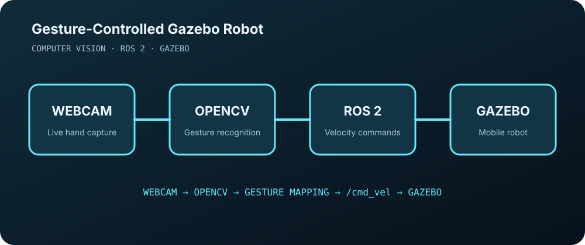

Project Overview_
This project uses a webcam and OpenCV to recognize hand gestures and translate them into robot movement commands. The recognized gestures are mapped to velocity commands published through ROS 2 and used to control a mobile robot inside the Gazebo simulation environment.

Webcam → OpenCV → Gesture mapping → ROS 2 /cmd_vel → Gazebo
Key Features_
- Real-time camera input using OpenCV
- Hand gesture detection and recognition
- Gesture-to-motion command mapping
- ROS 2 velocity command publishing
- Differential mobile robot control in Gazebo
- Hands-free human-robot interaction
Tech Stack_
- Ubuntu 22.04
- ROS 2 Humble
- Python
- OpenCV
- Gazebo
- geometry_msgs/Twist
- Webcam